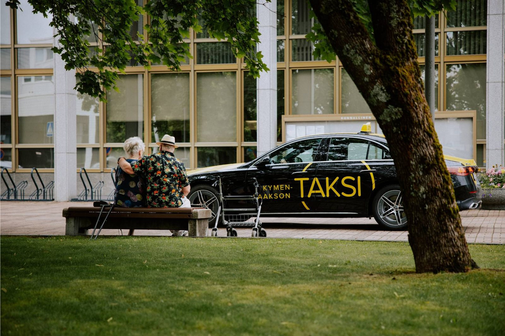

Sote-taksi
Kuljetuspalvelu Kymenlaakson hyvinvointialueen myöntämän palvelupäätöksen saaneille asiakkaille — turvallisesti ja tutusti.
Tilaa Sote-taksi numerosta
0800 302323(pvm/mpm)
Kuulo- ja puhevammaisten tekstiviestitilaukset
p. 040 563 1112
Kuljetukset voi tilata myös puhelinsovelluksella. Sovellus löytyy nimellä SOTE Kyyti sekä Google Play Store että App Store -kaupoista.
Kuljetuspalveluun liittyvät asiakastietosi tallennetaan Kymenlaakson hyvinvointialueella sosiaalihuollon asiakastietojärjestelmään (Tietosuojalaki 2018/1050).
Lisätietoja kuljetuspalveluun liittyen
Sosiaalihuollon asiakasneuvonnasta voit kysyä sosiaalipalveluistamme tai apua esimerkiksi omaan tai läheisen arjessa selviytymiseen liittyvissä asioissa. Ohjaamme tarvittaessa oikean palvelun piiriin. Palvelemme puhelimessa arkisin klo 9–14.
Soita 05 220 6000Ohjeita Sote-taksin tilaamiseen
Välityskeskus laatii sinulle kuljetuspalvelun järjestämistä varten asiakasprofiilin, johon kirjataan:
- Henkilötunnus (omavastuuosuuden laskutusta varten)
- Kotiosoite
- Puhelinnumero (jos haluaa tekstiviestin kyydin saapumisesta)
- Päätöksesi tiedot (määräaikaisuus, työ- ja opiskelumatkat)
- Kuljetukseesi liittyvät erillisoikeudet
Asiakasprofiilitietoja ei luovuteta kolmansille osapuolille.
Voit käyttää kuljetuspalvelumatkoja päätöksesi mukaisesti asiointi- ja virkistysmatkoihin tai työ- ja opiskelumatkoihin. Kuljetuspalvelumatkoja voi tehdä vakituisessa koti-/asuinkunnassa ja sen toiminnallisessa lähikunnassa:
- Kouvola: Hamina, Heinola, Iitti, Kotka, Lapinjärvi, Loviisa, Luumäki, Mäntyharju, Pyhtää ja Savitaipale
- Kotka: Hamina, Kouvola ja Pyhtää
- Hamina: Kotka, Kouvola, Miehikkälä ja Virolahti
- Miehikkälä: Hamina, Lappeenranta, Luumäki ja Virolahti
- Pyhtää: Kotka, Kouvola ja Loviisa
- Virolahti: Hamina ja Miehikkälä
Poikkeava matkustusoikeus käy ilmi päätöksestäsi. Kuljetuspalvelumatka on yksi yhdensuuntainen ja yhtäjaksoinen matka. Lyhyt pysähdys matkan aikana esim. saattajan nouto reitin varrelta, pankkiautomaatille tai postilaatikolle on mahdollinen. Pysähdystarpeesta osoitteineen tulee kertoa matkaa tilattaessa. Pidempi pysähtyminen keskeyttää kuljetuspalvelumatkan.
Työmatkoina korvataan kodin ja työpaikan välinen matka, kuljetuspalvelumatkoja ei voi käyttää työhön liittyvään matkustamiseen. Kuljetuspalvelumatkoja ei voi käyttää terveydenhuollon matkoihin, joiden korvaus perustuu sairausvakuutuslakiin tai kuuluu vakuutusyhtiölle.
Kymenlaakson hyvinvointialueella yhdistellään vammaispalvelulain perusteella julkisesti rahoitettuja matkoja. Matkojen yhdistelemisestä vastaa tilauskeskus.
Toimintakykyysi perustuen sinulle voidaan myöntää oikeus esimerkiksi invataksin käyttöön tai maksuttomaan saattajaan kuljetuspalvelumatkoilla. Palveluun liittyvät erillisoikeudet myönnetään aina yksilöllisen harkinnan perusteella.
Alle 3 kilometrin matkoja ei yhdistellä.
- Kuljetuspalvelumatka on tilattava Kymenlaakson Taksin tilausnumerosta.
- Tilauspuhelut nauhoitetaan.
- Ennakkotilauksista ei peritä varausmaksua.
- Tilaa mahdollisuuksien mukaan kerralla aina koko matkaketju.
- Tilaamalla matkan vähintään 60 min. aikaisemmin, varmistetaan sillä taksin saapuminen haluttuun aikaan.
- Odotusaika on enimmillään 15 min. + se aika, joka taksilta kestää ajaa asiakkaan luokse.
- Ilmoita matkan peruuntumisesta tilauskeskukseen vähintään 30 min. ennen matkaa. Perumaton tilaus vähentää asiakkaalta kuljetuspalvelumatkan.
- Noutopaikka, määränpää ja mahdolliset pysähdykset reitinvarrella osoitteineen (saattajan nouto, pankkiautomaatti, postilaatikko)
- Matkustaako mukana perheenjäsen tai saattaja
- Onko mukana apuvälineitä tai opaskoiraa
- Onko perillä oltava tiettyyn aikaan
- Paluumatkasi ajankohta, mikäli se on jo tiedossa
Omavastuuna peritään ajettavaa matkaa vastaava joukkoliikenteen maksu. Hyvinvointialue laskuttaa omavastuuosuudet kuukausittain.
Aikuinen:
- 3,50 € koti-/asuinkunnan alueella
- 5,50 € toiminnalliseen lähikuntaan enintään 30 km
- 7,40 € enintään 40 km
- 9,30 € enintään 50 km
- 11,80 € enintään 60 km
- Tästä eteenpäin Matkahuollon hinnasto
Lapsi (7–17 v):
- 1,80 € koti-/asuinkunnan alueella
- 3,50 € toiminnalliseen lähikuntaan
Toisen asteen opiskelijat:
- 0 € opiskelumatkat
- 0 € vapaa-ajan matkat koti-/asuinkunnan alueella
- Toiminnalliseen lähikuntaan kuten aikuisten ja lasten matkat iästä riippuen
- Muut opiskelumatkat: 1 € / suunta
- Työmatkat: 1 € / suunta
Mikäli asiakas tarvitsee saattajan, tämä kirjataan palvelupäätökseen. Omaishoidon tuen asiakkaalla on aina oikeus saattajan käyttämiseen. Saattajan on tultava mukaan samasta osoitteesta tai reitin varrelta ilman poikkeamistarvetta.
Kun 7–17-vuotias lapsi/nuori matkustaa kuljetuspalveluun oikeutetun vanhempansa/huoltajansa kanssa, häneltä peritään omavastuuosuutena soveltamisohjeessa olevan omavastuuosuustaulukon mukainen summa. Alle 7-vuotiailta ei omavastuuosuutta peritä.
Mukana kulkevat aikuiset perheenjäsenet maksavat matkasta omavastuun, joka vastaa matkan hintaa jaettuna asiakasmäärällä.
Henkilöllisyys tarkistetaan passista, henkilökortista tai ajokortista. Kuljettajan harkinnalla myös kuvaton Kela-kortti käy tunnistamiseen, jos säännöllisesti kuljetettavan asiakkaan henkilöllisyyttä ei ole syytä epäillä eikä hänellä ole käytössä kuvallista henkilötodistusta.
Myös tilaajan henkilökunnan antama vahvistus asiakkaan henkilöllisyydestä on hyväksyttävä, jos tilaajan henkilökuntaa on paikalla matkan lähtöpisteessä.
Kymenlaakson ulkopuolella asuvien asiakkaiden matkat hoidetaan erillisellä maksukortilla. Maksukortit tilataan hyvinvointialueen toimesta.
Etkö ole kuljetuspalvelupäätöksen saaja?
Kela-taksi on tarkoitettu Kelan korvaamille terveydenhuollon matkoille, ilman erillistä hyvinvointialueen palvelupäätöstä.
Siirry Kela-taksi-sivulleTilaa taksi apilla ilmaiseksi
tai soittamalla 0100 87227 (1,54 € puhelu + 0,81 € / min + pvm)